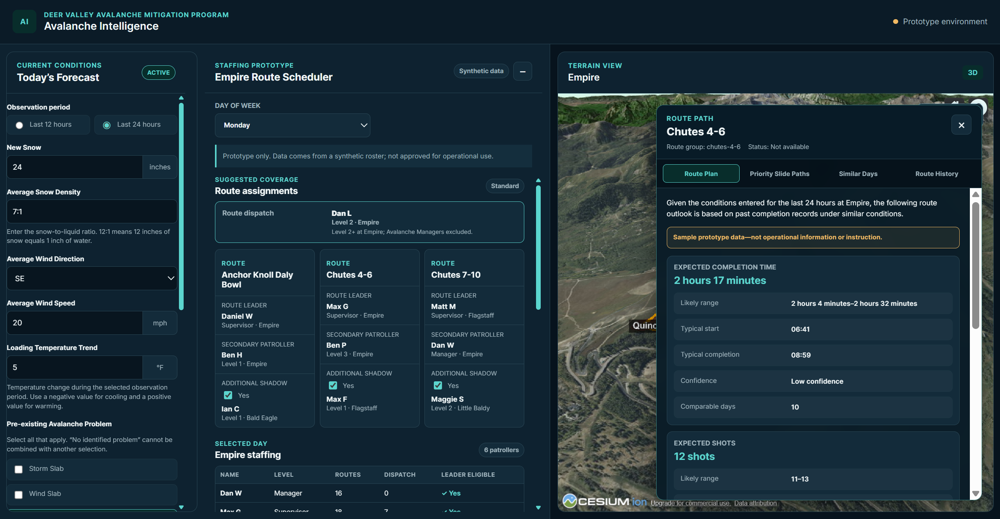

Customer advocate
Translate customer needs, objections, and feedback into products that deliver measurable value.
Product development · Information systems · Mountain operations
I build tools for real life challenges, turning feedback into actionable solutions.
Currently building
Avalanche IntelligenceA decision-support prototype designed to centralize forecast, terrain, and mitigation planning information for ski patrol teams.
A little context
My work connects customer insight, business strategy, and product development.
I bring three years of experience across SaaS sales, startup growth, hospitality operations, and emergency management. These roles have strengthened my ability to uncover customer needs, align stakeholders, and develop practical solutions to complex business problems.
Through my Master of Science in Information Systems, I’m expanding that foundation with skills in product strategy, data analysis, systems design, and technical implementation.
Translate customer needs, objections, and feedback into products that deliver measurable value.
Combine product strategy, data, and technical execution to build practical, usable solutions.
Align teams, navigate changing priorities, and solve complex problems in high-pressure environments.
Selected work
From operational prototypes to product strategy—each project begins with a decision that should be easier to make.

Featured product
A ski patrol-oriented planning interface that brings current conditions, terrain context, and mitigation recommendations into one operational view.
Product research
A concept for centralizing incident resources, schedules, operational links, and injury-pattern insights.
02Next build
A reserved space for the next case study in your portfolio.
03Experience & education
University of Utah
SquarePeg · Verkada
Deer Valley (24-26), Brighton, UT (23-25), Mount Snow, VT (15-23).
Let’s connect
I’m interested in product, technology, SaaS, and becoming a great product manager.